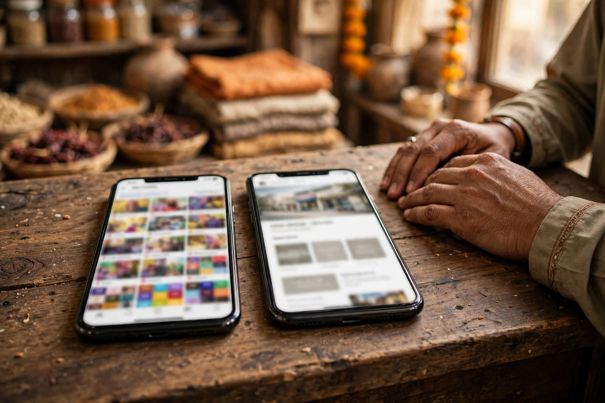

It is a fair question, asked by many Layyah business owners: my Facebook page has followers, photos and daily posts, so why would I pay for a website? The honest answer is not that Facebook is useless. It is that the two tools do different jobs, and one of those jobs, being found by ready-to-buy customers on Google, is one Facebook does poorly.
This comparison is deliberately even-handed. Facebook has real strengths for a local business, and a website has real costs. The right conclusion for most Layyah businesses is a sequence: use each tool for what it is good at, in the right order.
What a Facebook Page Does Well
Facebook is where much of Layyah already spends time, including customers who rarely search the web directly. A page is free, quick to open and natural for daily life: new stock photos, a changed timing notice, a wedding season collection, a short video from the shop floor. Comments and messages create conversation, and familiar customers share posts into exactly the local circles a business wants to reach.
For announcements and community presence, Facebook is genuinely strong. Any sensible online plan for a Layyah shop, including the one in our guide to SEO for Layyah shops and retailers, keeps the page active rather than abandoning it.

Where Facebook Falls Short
The weaknesses appear when a stranger is looking for you. Facebook search is poor, posts sink within days, and important facts, your services, timings and location, are scattered instead of organised. A customer comparing three businesses on Google will rarely land on your page at all, because Google results favour business listings and websites.
There is also the question of ownership. Your page exists at Facebook pleasure: reach can fall without warning, accounts get locked, and pages are sometimes restricted at the worst moment. Building your entire presence on rented ground is a risk a serious business should reduce, not accept forever.
What Your Own Website Gives You
A website is the one place online that is yours. Each service gets a permanent page written in the words customers search for, your address and hours sit clearly on every page, and a visitor is always one tap away from calling you. Google can rank those pages for years, long after a social post has vanished from every feed.
- Permanent pages for each service, written for real searches
- Full control over design, information and contact paths
- A stable link for your Google Business Profile to point to
- An asset that grows in value instead of expiring weekly
Building those pages well is on-page SEO work, and it is part of the SEO services in Layyah that Zaheer Seo Expert provides.
The Honest Answer: Both, in the Right Order
Start with what is free and immediate: a complete Google Business Profile and an active Facebook page. Then build a simple website, even four or five pages, and let it become the centre everything else points to. Facebook announces; the website informs and converts; the Google listing brings the ready customer to both.
Whichever stage you are at, avoid the traps listed in website mistakes Layyah businesses make, especially an unusable phone number and outdated information, which waste the traffic both tools send you.
Costs and Control, Compared Plainly
Facebook costs time rather than money and gives you little control. A website costs some money and some care, and gives you nearly all the control. For a Layyah business planning to trade for years, the website is not an expense to avoid but the foundation to build on, with Facebook as a loud and friendly voice on top of it.

What About WhatsApp and Other Channels?
Many Layyah businesses also deal with customers through messaging apps, and those channels have their place: quick questions, order confirmations, sharing a location pin. Treat them the same way as Facebook, as conversation tools that support the centre of your presence rather than replacing it. A message thread cannot be found by a searching stranger, disappears under new chats and organises nothing.
The healthy structure is a hub and spokes. Your Google listing and website form the hub, holding the permanent, searchable facts about your business. Facebook and messaging apps are the spokes, carrying daily conversation out to customers and bringing them back to the hub when they need details. Businesses that understand this division stop asking which single tool to choose and start making each tool do the job it is actually good at.
Frequently Asked Questions
If my Facebook page is active, do I still need a website?
For most businesses, yes, eventually. Facebook is good for updates and conversation, but Google searches, which bring customers who are ready to buy or visit, lead to your Google listing and website. A simple website also gives you a permanent address online that you control.
Which should a new Layyah business set up first?
Start with a Google Business Profile, which is free and drives calls and visits, and a Facebook page for updates and community. Add a simple website next, even a few pages, and connect everything with the same name, phone number and address.
Can a Facebook page rank on Google instead of a website?
Sometimes a page appears in results, but you do not control how it is shown, and it rarely answers detailed searches about your services. Your own pages can be written for exactly the searches your customers make, which is the core of SEO.
Is a website expensive to maintain?
A simple business website has modest running costs compared with shop rent: a domain and hosting renewed periodically, plus updates when your information changes. The bigger cost is usually neglect; an outdated website, like an outdated listing, quietly loses customers.
Want More Customers From Google?
Call 0327 7350830 or email seozaheer14@gmail.com. Zaheer Seo Expert, Layyah - Rajan Shah Road, Rana Nagar, Chak 116 TDA, Pakistan. Open 24 hours.
Get Your SEO Strategy →